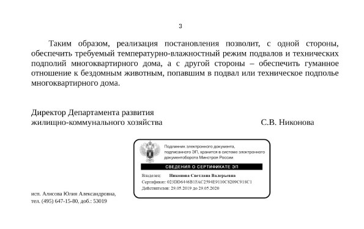

Инструкции и схемы борьбы против замуровывания кошек. Москва и МО
Дорогие друзья! Представляем Вам наши инструкции и схемы борьбы за свободу кошек. Помните, что никакие новые документы, которые появляются не отменяют борьбы! Без борьбы - все бумажки будут бесполезны! И еще одна важная вещь - личные приемы значительно эффективнее письменных обращений, а точнее письменные обращения лучше взять с собой на личный прием, чем просто отправить по почте или через электронную приемную.
Что делать, если кошек замуровали в подвале или выгнали наружу?
Сразу фотографировать, фото должно быть крупным планом закрытого продуха, если в продухе видны кошки - снимите видео, но это бывает довольно редко.
1. Звоните в единую диспетчерскую службу г. Москвы 8 (495) 539-53-53 и оставляете заявку, Вам дают ее номер. Далее звоните нам в Котоспас 8(499) 112-07-49 Сфотографировали и сразу присылаете нам фото/видео/точный адрес, можно на ватсап +7 977 816-17-03 (Елена) или на почту gf_anna@mail.ru.
1.1. Выкладывайте фото и пост о случившемся в социальные сети! Соцсети это огромная сила, Вам нужно найти группы своего района в фб/вконтакте/Одноклассниках и выложить информацию на сервис - Яндекс -район.
2. Идете в свою управляющую компанию и пишете заявление и записывайтесь на личный прием к ее руководителю. Даже если продухи и кошки закрыты по ее приказу, даже если они ненавидят кошек и вам говорят об этом открыто. Письменное заявление и личный прием - обязательны. Если Вы не знаете, а кто же у Вас управляющая компания - поищите на https://dom.mos.ru/ . Если Вы не живете, не прописаны в этом доме, а просто являетесь опекуном кошек, Вы смело можете обращаться, Вы сообщаете о совершении преступления, это может сделать любой человек
Пример текста: Уважаемый руководитель ФИО, Прошу Вас немедленно прекратить противоправные действия и открыть продух для кошек, замурованных в подвале по адресу...., данные действия нарушают распоряжение зам.мэра г. Москвы № 18-38-358/8 от 06.07.2018 г.(Обновленная факсограмма №18-38-250/20 от 07.09.2020 г.), новый федеральный закон об ответственном обращении с животными №498 от 2 7.12.2018 статьи 3.5 и 11.1, новое распоряжение правительства РФ №1498 от 23.11.2019 г, согласно последнему разъясненительному письму Минстроя пункты 3.4.1 и 3.4.7 не подлежат применению, действия по замуровыванию кошек, равно как и их выкидывание на улицу являются жестоким обращением с животными и покушением на преступление по 245 статье Уголовного кодекса РФ, а также по статье 5.7 КоАП г. Москвы.
Ваши ФИО, подпись, дата
Важный совет! Не общайтесь с низовым персоналом управляющей компании, Вам нужен строго руководитель или заместитель руководителя (для крупных компаний)
1. Звоните в единую диспетчерскую службу г. Москвы 8 (495) 539-53-53 и оставляете заявку, Вам дают ее номер. Далее звоните нам в Котоспас 8(499) 112-07-49 Сфотографировали и сразу присылаете нам фото/видео/точный адрес, можно на ватсап +7 977 816-17-03 (Елена) или на почту gf_anna@mail.ru.
1.1. Выкладывайте фото и пост о случившемся в социальные сети! Соцсети это огромная сила, Вам нужно найти группы своего района в фб/вконтакте/Одноклассниках и выложить информацию на сервис - Яндекс -район.
2. Идете в свою управляющую компанию и пишете заявление и записывайтесь на личный прием к ее руководителю. Даже если продухи и кошки закрыты по ее приказу, даже если они ненавидят кошек и вам говорят об этом открыто. Письменное заявление и личный прием - обязательны. Если Вы не знаете, а кто же у Вас управляющая компания - поищите на https://dom.mos.ru/ . Если Вы не живете, не прописаны в этом доме, а просто являетесь опекуном кошек, Вы смело можете обращаться, Вы сообщаете о совершении преступления, это может сделать любой человек
Пример текста: Уважаемый руководитель ФИО, Прошу Вас немедленно прекратить противоправные действия и открыть продух для кошек, замурованных в подвале по адресу...., данные действия нарушают распоряжение зам.мэра г. Москвы № 18-38-358/8 от 06.07.2018 г.(Обновленная факсограмма №18-38-250/20 от 07.09.2020 г.), новый федеральный закон об ответственном обращении с животными №498 от 2 7.12.2018 статьи 3.5 и 11.1, новое распоряжение правительства РФ №1498 от 23.11.2019 г, согласно последнему разъясненительному письму Минстроя пункты 3.4.1 и 3.4.7 не подлежат применению, действия по замуровыванию кошек, равно как и их выкидывание на улицу являются жестоким обращением с животными и покушением на преступление по 245 статье Уголовного кодекса РФ, а также по статье 5.7 КоАП г. Москвы.
Ваши ФИО, подпись, дата
Важный совет! Не общайтесь с низовым персоналом управляющей компании, Вам нужен строго руководитель или заместитель руководителя (для крупных компаний)
3. Пишете заявление в полицию, если заявление принимать отказываются, запишите
ФИО того, кто Вам отказал и подойдите к начальнику дежурной части или другим
руководителям. Вы можете пожаловаться на действия полиции на единую горячую линию МВД по тел. 8 (495) 694-92-29, 8 (495) 667-74-47
4. Записываетесь на прием к главе управы и к руководителю окружной жилищной
инспекции. Помните, что везде с собой нужно иметь и письменные обращения, не пренебрегайте также помощью муниципальных депутатов района, сейчас не редкость депутаты, выступающе за кошек.
Пример:
Уважаемый Александр Леонидович!
Прошу обратить внимание на деятельность управляющей компании ООО "УК"Жилфонд" (г.Москва, улица Дмитриевского, дом 3, тел. +7 (499) 721-41-49)! По адресам г.Москва, улицы Дмитриевского, Святоозерская, Т.Макаровой и Рудневка сложилась критическая ситуация. В подвальных помещениях многоквартирных домов проживают кошки, которые имеют опекунов среди жильцов домов.
К сожалению, ООО "УК"Жилфонд" 15 октября 2019 года замуровали наглухо подвальные продухи, таким образом, заблокировав вход и выход животных из подвальных помещений через продухи, что есть жестокое и нетерпимое отношение к животным!
Обращаю Ваше внимание, что согласно распоряжению № 18-38-250/20 от 07.09.20 зам.мэра Бирюкова П.П. префекты округов г.Москвы и главы Управ районов должны обеспечить беспрепятственный проход мелких животных в подвальные помещения жилого и нежилого фонда через слуховые окна и продухи! Данное распоряжение должно было быть направлено Префектурой ВАО г.Москвы в Управу района Косино-Ухтомский для дальнейшего информирования управляющих компаний о его обязательности к исполнению, и что несоблюдение требования распоряжения является поводом для направления жалобы в Жилищную инспекцию г.Москвы, Правительство г.Москвы и надзорные органы.
Согласно ст. 36 Жилищного Кодекса РФ собственники жилья самостоятельно решают, могут ли в подвале их дома жить кошки или нет. Нет запрета нахождения кошек в подвалах домов и в Санитарно-эпидемиологических правилах и нормативах СанПиН 2.1.2.2645-10 "Санитарно-эпидемиологические требованиях к условиям проживания в жилых зданиях и помещениях" (утв. Постановлением Главного государственного санитарного врача РФ от 10 июня 2010 г. N 64), где относительно мер, «направленных на предупреждение возникновения и распространения инфекционных заболеваний, связанных с санитарным состоянием жилого здания», говорится лишь об «уничтожении насекомых и грызунов (дезинсекция и дератизация)» (п. 9.2.).
Также на данный момент утверждено Постановление Правительства РФ №1498 «О внесении изменений в Правила содержания общего имущества в многоквартирном доме, утвержденные постановлением Правительства Российской Федерации от 13 августа 2006 г. № 491», которое устанавливает норму постоянного открытия одного подвального продуха в многоквартирном доме, такде обращаю Ваше внимание, что пункты 3.4.1 и 3.4.7 не подлежат применению, так как противоречат новому постановлению (разъяснительное письмо Минстроя прилагаю).
По ситуации с кошками, проживающими в подвальных помещениях многоквартирных домов, и по вопросу замуровывания подвальных продухов работниками ООО "УК"Жилфонд", обращаю внимание, что согласно федеральному закону от 27 декабря 2018 г. N 498-ФЗ "Об ответственном обращении с животными» статья 3 пункт 5 такое обращение, которое привело или может привести к гибели, увечью или иному повреждению здоровья животного (включая истязание животного, в том числе голодом, жаждой, побоями, иными действиями) является жестоким и подлежит уголовному преследованию по статье УК РФ №245. Таким образом, если работники ООО "УК"Жилфонд" предпримут любые действия по изгнанию кошек из подвала, закрытию подвальных продухов, в т.ч. с замуровыванием животных внутри подвального помещения, то эти действия будут носить признаки преступного деяния, предусмотренного ст.245 УК РФ пункт 2, совершенные группой лиц по предварительному сговору с наказанием в виде лишения свободы от трех до пяти лет.
Прошу Вас довести до сведения ООО "УК"Жилфонд" и его руководство сведения о необходимости соблюдения распоряжений Правительства г.Москвы и Минстроя России и открыть доступ животным (кошкам) в подвальные помещения особенно в осенне-зимний период!
5. Последняя инстанция - Префектура округа, чтобы записаться на прием к руководителям и заместителям Вам необходимо уже иметь ответы из управы и других инстанций. Если Вы дошли до Префектуры - обратите внимание руководителей, что урава района не может решить такой небольшой вопрос на своем районном уровне, разве они бы хотели, чтобы к ним приходили по всем замурованным кошкам?
И помните, что Вам не нужно ждать, что кошки умрут, пока Вы бегаете по инстанциям, так как вскрытие продуха мы Вам обеспечим, но вскрытие продуха не отменяет хождений по инстанциям во избежание рецидивов и повторных замуровываний, уважайте нашу работу, если Вам лень побороться за кошек и проще вызывать нас каждый день, то нам это сложнее и Вы лишаете помощи других кошек.
Внимание! Разъяснение Минстроя!
Почему 170 постановлене Госстроя России 2003 г. больше нельзя применять против кошек!
По поводу 170 постановления Госстроя России от 2003 года, Об утверждении Правил и норм технической эксплуатации жилищного фонда. Пункты 3.4.1. и 3.4.7. https://base.garant.ru/12132859/
Министерство строительство выпустило разъяснения, согласно которому пункты 3.4.1 о недопуске кошек в подвалы и пункт 3.4.7 о сетках больше не подлежат применению, так как противоречат новому Постановлению Правительства РФ № 1498 от 23.11.2019!
ФИО того, кто Вам отказал и подойдите к начальнику дежурной части или другим
руководителям. Вы можете пожаловаться на действия полиции на единую горячую линию МВД по тел. 8 (495) 694-92-29, 8 (495) 667-74-47
4. Записываетесь на прием к главе управы и к руководителю окружной жилищной
инспекции. Помните, что везде с собой нужно иметь и письменные обращения, не пренебрегайте также помощью муниципальных депутатов района, сейчас не редкость депутаты, выступающе за кошек.
Пример:
Уважаемый Александр Леонидович!
Прошу обратить внимание на деятельность управляющей компании ООО "УК"Жилфонд" (г.Москва, улица Дмитриевского, дом 3, тел. +7 (499) 721-41-49)! По адресам г.Москва, улицы Дмитриевского, Святоозерская, Т.Макаровой и Рудневка сложилась критическая ситуация. В подвальных помещениях многоквартирных домов проживают кошки, которые имеют опекунов среди жильцов домов.
К сожалению, ООО "УК"Жилфонд" 15 октября 2019 года замуровали наглухо подвальные продухи, таким образом, заблокировав вход и выход животных из подвальных помещений через продухи, что есть жестокое и нетерпимое отношение к животным!
Обращаю Ваше внимание, что согласно распоряжению № 18-38-250/20 от 07.09.20 зам.мэра Бирюкова П.П. префекты округов г.Москвы и главы Управ районов должны обеспечить беспрепятственный проход мелких животных в подвальные помещения жилого и нежилого фонда через слуховые окна и продухи! Данное распоряжение должно было быть направлено Префектурой ВАО г.Москвы в Управу района Косино-Ухтомский для дальнейшего информирования управляющих компаний о его обязательности к исполнению, и что несоблюдение требования распоряжения является поводом для направления жалобы в Жилищную инспекцию г.Москвы, Правительство г.Москвы и надзорные органы.
Согласно ст. 36 Жилищного Кодекса РФ собственники жилья самостоятельно решают, могут ли в подвале их дома жить кошки или нет. Нет запрета нахождения кошек в подвалах домов и в Санитарно-эпидемиологических правилах и нормативах СанПиН 2.1.2.2645-10 "Санитарно-эпидемиологические требованиях к условиям проживания в жилых зданиях и помещениях" (утв. Постановлением Главного государственного санитарного врача РФ от 10 июня 2010 г. N 64), где относительно мер, «направленных на предупреждение возникновения и распространения инфекционных заболеваний, связанных с санитарным состоянием жилого здания», говорится лишь об «уничтожении насекомых и грызунов (дезинсекция и дератизация)» (п. 9.2.).
Также на данный момент утверждено Постановление Правительства РФ №1498 «О внесении изменений в Правила содержания общего имущества в многоквартирном доме, утвержденные постановлением Правительства Российской Федерации от 13 августа 2006 г. № 491», которое устанавливает норму постоянного открытия одного подвального продуха в многоквартирном доме, такде обращаю Ваше внимание, что пункты 3.4.1 и 3.4.7 не подлежат применению, так как противоречат новому постановлению (разъяснительное письмо Минстроя прилагаю).
По ситуации с кошками, проживающими в подвальных помещениях многоквартирных домов, и по вопросу замуровывания подвальных продухов работниками ООО "УК"Жилфонд", обращаю внимание, что согласно федеральному закону от 27 декабря 2018 г. N 498-ФЗ "Об ответственном обращении с животными» статья 3 пункт 5 такое обращение, которое привело или может привести к гибели, увечью или иному повреждению здоровья животного (включая истязание животного, в том числе голодом, жаждой, побоями, иными действиями) является жестоким и подлежит уголовному преследованию по статье УК РФ №245. Таким образом, если работники ООО "УК"Жилфонд" предпримут любые действия по изгнанию кошек из подвала, закрытию подвальных продухов, в т.ч. с замуровыванием животных внутри подвального помещения, то эти действия будут носить признаки преступного деяния, предусмотренного ст.245 УК РФ пункт 2, совершенные группой лиц по предварительному сговору с наказанием в виде лишения свободы от трех до пяти лет.
Прошу Вас довести до сведения ООО "УК"Жилфонд" и его руководство сведения о необходимости соблюдения распоряжений Правительства г.Москвы и Минстроя России и открыть доступ животным (кошкам) в подвальные помещения особенно в осенне-зимний период!
5. Последняя инстанция - Префектура округа, чтобы записаться на прием к руководителям и заместителям Вам необходимо уже иметь ответы из управы и других инстанций. Если Вы дошли до Префектуры - обратите внимание руководителей, что урава района не может решить такой небольшой вопрос на своем районном уровне, разве они бы хотели, чтобы к ним приходили по всем замурованным кошкам?
И помните, что Вам не нужно ждать, что кошки умрут, пока Вы бегаете по инстанциям, так как вскрытие продуха мы Вам обеспечим, но вскрытие продуха не отменяет хождений по инстанциям во избежание рецидивов и повторных замуровываний, уважайте нашу работу, если Вам лень побороться за кошек и проще вызывать нас каждый день, то нам это сложнее и Вы лишаете помощи других кошек.
Внимание! Разъяснение Минстроя!
Почему 170 постановлене Госстроя России 2003 г. больше нельзя применять против кошек!
По поводу 170 постановления Госстроя России от 2003 года, Об утверждении Правил и норм технической эксплуатации жилищного фонда. Пункты 3.4.1. и 3.4.7. https://base.garant.ru/12132859/
Министерство строительство выпустило разъяснения, согласно которому пункты 3.4.1 о недопуске кошек в подвалы и пункт 3.4.7 о сетках больше не подлежат применению, так как противоречат новому Постановлению Правительства РФ № 1498 от 23.11.2019!

Разъяснение Минстроя. Стр. 3
Разъяснение Минстроя - скачать пдф - https://yadi.sk/i/GwtRGlYzSKbDdA
А также! У нас есть Закон об ответственном обращении с животными - ФЗ 498 от 27.12.2018 статьи 3.5 и 11.1.
http://www.consultant.ru/document/cons_doc_LAW_314646/4f41fe599ce341751e4e34dc50a4b676674c1416/
Определение жестокого обращения с животными:
жестокое обращение с животным - обращение с животным, которое привело или может привести к гибели, увечью или иному повреждению здоровья животного (включая истязание животного, в том числе голодом, жаждой, побоями, иными действиями), нарушение требований к содержанию животных, установленных настоящим Федеральным законом, другими федеральными законами и иными нормативными правовыми актами Российской Федерации (в том числе отказ владельца от содержания животного), причинившее вред здоровью животного, либо неоказание при наличии возможности владельцем помощи животному, находящемуся в опасном для жизни или здоровья состоянии;
В соответствии с этим определением, жизнь животных не может быть подвергнута опасности, в результате которой животное может погибнуть.
ФЗ 498 выше по юридичческой силе 170 постановления, он не отменяет его, но все граждане РФ обязаны соблюдать его.
Поэтому, даже если в доме проведено общее собрание собственников жилья, а там живут кошки, ни выкинуть их, по крайней мере зимой, ни замуровать внутри никто НЕ МОЖЕТ, потому что это НЕЗАКОННО.
Прежде, чем закрыть дом от кошек полностью, нужно гуманно решить судьбу этих кошек.
А новое постановление Правительства РФ № 1498 от 23.11.2019 - указывает на то, что один продух должен быть открыт даже в случае сильных морозов. Всегда.
В Москве тема безнадзорных животных и полномочия по обращению с животными без владельцев - относится к Управам районов, куда девать кошек, если в доме проведено Общее собрание? - это вопросы к управе района. Гуманным способом в соответствии с законом.
До того момента, когда кошки будут признаны частью экосистемы, и их нельзя будет безвозвратно ловить, до этого момент пока далеко, так как регламент по отлову и содержанию безнадзорных животных в г. Москве 2014 года еще не изменили, но изменят и мы будем этого добиваться.
Судьба же 170 постановления однозначна - его вскоре ОТМЕНЯТ, его судьба - быть выкинутым в помойку и навсегда забытым, и другой судьбы у него НЕ БУДЕТ.
Разъяснение Минстроя - скачать пдф - https://yadi.sk/i/GwtRGlYzSKbDdA
А также! У нас есть Закон об ответственном обращении с животными - ФЗ 498 от 27.12.2018 статьи 3.5 и 11.1.
http://www.consultant.ru/document/cons_doc_LAW_314646/4f41fe599ce341751e4e34dc50a4b676674c1416/
Определение жестокого обращения с животными:
жестокое обращение с животным - обращение с животным, которое привело или может привести к гибели, увечью или иному повреждению здоровья животного (включая истязание животного, в том числе голодом, жаждой, побоями, иными действиями), нарушение требований к содержанию животных, установленных настоящим Федеральным законом, другими федеральными законами и иными нормативными правовыми актами Российской Федерации (в том числе отказ владельца от содержания животного), причинившее вред здоровью животного, либо неоказание при наличии возможности владельцем помощи животному, находящемуся в опасном для жизни или здоровья состоянии;
В соответствии с этим определением, жизнь животных не может быть подвергнута опасности, в результате которой животное может погибнуть.
ФЗ 498 выше по юридичческой силе 170 постановления, он не отменяет его, но все граждане РФ обязаны соблюдать его.
Поэтому, даже если в доме проведено общее собрание собственников жилья, а там живут кошки, ни выкинуть их, по крайней мере зимой, ни замуровать внутри никто НЕ МОЖЕТ, потому что это НЕЗАКОННО.
Прежде, чем закрыть дом от кошек полностью, нужно гуманно решить судьбу этих кошек.
А новое постановление Правительства РФ № 1498 от 23.11.2019 - указывает на то, что один продух должен быть открыт даже в случае сильных морозов. Всегда.
В Москве тема безнадзорных животных и полномочия по обращению с животными без владельцев - относится к Управам районов, куда девать кошек, если в доме проведено Общее собрание? - это вопросы к управе района. Гуманным способом в соответствии с законом.
До того момента, когда кошки будут признаны частью экосистемы, и их нельзя будет безвозвратно ловить, до этого момент пока далеко, так как регламент по отлову и содержанию безнадзорных животных в г. Москве 2014 года еще не изменили, но изменят и мы будем этого добиваться.
Судьба же 170 постановления однозначна - его вскоре ОТМЕНЯТ, его судьба - быть выкинутым в помойку и навсегда забытым, и другой судьбы у него НЕ БУДЕТ.
Схема борьбы. Московская область
1. Обязательно найдите и зарегистрируйтесь в единой диспетчерской службе МО https://eds.mosreg.ru/ и на портале ДОБРОДЕЛ и найдите местную диспетчерскую службу, оставьте там жалобу и заявку.
1.1. Не забудьте сделать фото и выложить в городских социальных сетях, если есть городские СМИ -можно написать и туда. Также по подмосковью есть телеканал 360 и другие телеканалы, к которым можно обратиться. Чем больше шума, тем лучше!
2. Дальше Вы повторяете те же действия, что и в Москве, Вы ссылаетесь на те же пункты и постановления, кроме факсограммы Бирюкова и Московского КоАП.
При обращении в полицию не забывайте о горячей линии МВД России 8-800-222-74-47, здесь Вы можете оставить жалобу на бездействие полиции. Также можно обратиться в Прокуратуру района. Не забывайте что у Вас также есть Московская областная дума и Правительство Московской области, где руководители и депутаты также ведут личные приемы граждан.
По Московской области очень желательно поискать мужчин для взлома продуха самостоятельно, но если никакие инстанции на Вас не реагируют, а кошки внутри - звоните нам.
1. Обязательно найдите и зарегистрируйтесь в единой диспетчерской службе МО https://eds.mosreg.ru/ и на портале ДОБРОДЕЛ и найдите местную диспетчерскую службу, оставьте там жалобу и заявку.
1.1. Не забудьте сделать фото и выложить в городских социальных сетях, если есть городские СМИ -можно написать и туда. Также по подмосковью есть телеканал 360 и другие телеканалы, к которым можно обратиться. Чем больше шума, тем лучше!
2. Дальше Вы повторяете те же действия, что и в Москве, Вы ссылаетесь на те же пункты и постановления, кроме факсограммы Бирюкова и Московского КоАП.
При обращении в полицию не забывайте о горячей линии МВД России 8-800-222-74-47, здесь Вы можете оставить жалобу на бездействие полиции. Также можно обратиться в Прокуратуру района. Не забывайте что у Вас также есть Московская областная дума и Правительство Московской области, где руководители и депутаты также ведут личные приемы граждан.
По Московской области очень желательно поискать мужчин для взлома продуха самостоятельно, но если никакие инстанции на Вас не реагируют, а кошки внутри - звоните нам.
E-mail: gf_anna@mail.ru
Котоспас, спасение замурованных кошек, 2021
Curiosity about life in all its aspects, I think, is still the secret of great creative people.